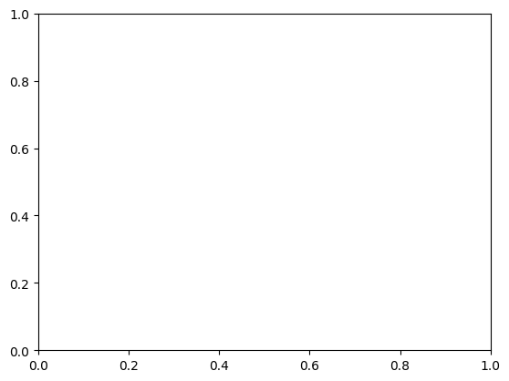

## https://matplotlib.org/stable/users/explain/quick_start.html#quick-start
import matplotlib.pyplot as plt
import numpy as npP05_Matplot
Python Graphics
- subplots()를 통해서 산점도의 기본 프레임을 설정
fig, ax = plt.subplots() # Create a figure containing a single Axes.
ax.plot([1, 2, 3, 4], [1, 4, 2, 3]) # Plot some data on the Axes.
plt.show() # Show the figure.- 행렬 도표 형식으로 그래프의 구조를 결정
- 빈 그래프, 하나의 그래프, 2*2 그래프, 왼편과 오른편의 구조가 다른 그래프
fig = plt.figure()
# an empty figure with no Axes
fig, ax = plt.subplots()
# a figure with a single Axes
fig, axs = plt.subplots(2, 2)
# a figure with a 2x2 grid of Axes
fig, axs = plt.subplot_mosaic([['left', 'right_top'],
['left', 'right_bottom']])
# a figure with one Axes on the left, and two on the right:<Figure size 640x480 with 0 Axes>

산점도 b\(\sim\)a
- xlabel / ylabel (x축과 y의 이름)
- figsize (플랏의 크기)
- c는 색깔, s는 크기
np.random.seed(19680801)
# seed the random number generator.
data = {'a': np.arange(50),
'c': np.random.randint(0, 50, 50),
'd': np.random.randn(50)}
data['b'] = data['a'] + 10 * np.random.randn(50)
data['d'] = np.abs(data['d']) * 100
fig, ax = plt.subplots(figsize=(5, 2.7), layout='constrained')
ax.scatter('a', 'b', c='c', s='d', data=data)
ax.set_xlabel('entry a')
ax.set_ylabel('entry b')Text(0, 0.5, 'entry b')- 코딩 스타일
- 기본적으로 하나의 플랏에 이어서 덧붙여서 그릴 수 있음
- legend: 연달아 붙은 플랏들을 구별해 주는 범례
x = np.linspace(0, 2, 100) # Sample data.
fig, ax = plt.subplots(figsize=(5, 2.7), layout='constrained')
ax.plot(x, x, label='linear')
ax.plot(x, x**2, label='quadratic')
ax.plot(x, x**3, label='cubic')
ax.set_xlabel('x label')
ax.set_ylabel('y label')
ax.set_title("Simple Plot")
ax.legend()x = np.linspace(0, 2, 100) # Sample data.
plt.figure(figsize=(5, 2.7), layout='constrained')
plt.plot(x, x, label='linear')
plt.plot(x, x**2, label='quadratic')
plt.plot(x, x**3, label='cubic')
plt.xlabel('x label')
plt.ylabel('y label')
plt.title("Simple Plot")
plt.legend()
- 함수를 이용한 플랏
- marker를 이용해서 점의 형태를 결정
def my_plotter(ax, data1, data2, param_dict):
"""
A helper function to make a graph.
"""
out = ax.plot(data1, data2, **param_dict)
return out
data1, data2, data3, data4 = np.random.randn(4, 100) # make 4 random data sets
fig, (ax1, ax2) = plt.subplots(1, 2, figsize=(5, 2.7))
my_plotter(ax1, data1, data2, {'marker': 'x'})
my_plotter(ax2, data3, data4, {'marker': 'o'})- 선과 형태에 대해서 옵션
- linewidth: 선의 굵기
- linestyle: 선의 형태
fig, ax = plt.subplots(figsize=(5, 2.7))
x = np.arange(len(data1))
ax.plot(x, np.cumsum(data1), color='blue', linewidth=3, linestyle='--')
l, = ax.plot(x, np.cumsum(data2), color='orange', linewidth=2)
l.set_linestyle(':')
# 선의 형태- 점의 색깔 지정
- facecolor: 안의 색깔
- edgecolor: 테두리 색깔
fig, ax = plt.subplots(figsize=(5, 2.7))
ax.scatter(data1, data2, s=50, facecolor='C0', edgecolor='k')- 점의 형태로 구분을 지음
fig, ax = plt.subplots(figsize=(5, 2.7))
ax.plot(data1, 'o', label='data1')
ax.plot(data2, 'd', label='data2')
ax.plot(data3, 'v', label='data3')
ax.plot(data4, 's', label='data4')
ax.legend()
- 히스토그램
- 50개의 구간, density: 밀도함수는 표시
- facecolor: 안의 색깔, alpha: 투명도
- ax.text: 텍스트 집어 넣기 (가로, 세로 위치 및 문구)
mu, sigma = 115, 15
x = mu + sigma * np.random.randn(10000)
fig, ax = plt.subplots(figsize=(5, 2.7), layout='constrained')
n, bins, patches = ax.hist(x, 50, density=True, facecolor='C0', alpha=0.75)
ax.set_xlabel('Length [cm]')
ax.set_ylabel('Probability')
ax.set_title('Aardvark lengths\n (not really)')
ax.text(75, .025, r'$\mu=115,\ \sigma=15$')
ax.axis([55, 175, 0, 0.03])
ax.grid(True)- 화살표
- 화살표 표시 가능
- xy: 화살표 지정 위치, xytext: 문구 위치, shrink: 어느 정도 가꾸이 갈지
- set_ylim: y축 값의 범위를 지정
fig, ax = plt.subplots(figsize=(5, 2.7))
t = np.arange(0.0, 5.0, 0.01)
s = np.cos(2 * np.pi * t)
line, = ax.plot(t, s, lw=2)
ax.annotate('local max', xy=(2, 1), xytext=(3, 1.5),
arrowprops=dict(facecolor='black', shrink=0.05))
ax.set_ylim(-2, 2)fig, ax = plt.subplots(figsize=(5, 2.7))
ax.plot(np.arange(len(data1)), data1, label='data1')
ax.plot(np.arange(len(data2)), data2, label='data2')
ax.plot(np.arange(len(data3)), data3, 'd', label='data3')
ax.legend()- 스케일 지정
- 원 값의 스케일을 변환해서 출력
fig, axs = plt.subplots(1, 2, figsize=(5, 2.7), layout='constrained')
xdata = np.arange(len(data1))
axs[0].plot(xdata, data)
axs[1].set_yscale('log')
# y log transformation
axs[1].plot(xdata, data)- xticks / yticks
- 눈금을 조정
fig, axs = plt.subplots(2, 1, layout='constrained')
axs[0].plot(xdata, data1)
axs[0].set_title('Automatic ticks')
axs[1].plot(xdata, data1)
axs[1].set_xticks(np.arange(0, 100, 30), ['zero', '30', 'sixty', '90'])
# 0/30/60/90 에 이름을 지정
axs[1].set_yticks([-1.5, 0, 1.5])
# -1.5, 0. 1.5
axs[1].set_title('Manual ticks')Text(0.5, 1.0, 'Manual ticks')- 시계열 데이터 표시법
- 날짜 표시 기법
from matplotlib.dates import ConciseDateFormatter
fig, ax = plt.subplots(figsize=(5, 2.7), layout='constrained')
dates = np.arange(np.datetime64('2021-11-15'), np.datetime64('2021-12-25'),
np.timedelta64(1, 'h'))
data = np.cumsum(np.random.randn(len(dates)))
ax.plot(dates, data)
ax.xaxis.set_major_formatter(ConciseDateFormatter(ax.xaxis.get_major_locator()))- 막대 그래프
- 범주의 이름과 값을 명기
fig, ax = plt.subplots(figsize=(5, 2.7), layout='constrained')
categories = ['turnips', 'rutabaga', 'cucumber', 'pumpkins']
ax.bar(categories, 100*np.random.rand(len(categories)))- twinx 구문
- 축에 대한 설정을 추가 (ax1, ax2 - 하나의 그림,
fig, (ax1, ax3) = plt.subplots(1, 2, figsize=(7, 2.7), layout='constrained')
l1, = ax1.plot(t, s)
ax2 = ax1.twinx()
# 그림 위에 또 하나의 그림을 표시
l2, = ax2.plot(t, range(len(t)), 'C1')
ax2.legend([l1, l2], ['Sine (left)', 'Straight (right)'])
ax3.plot(t, s)
ax3.set_xlabel('Angle [rad]')
ax4 = ax3.secondary_xaxis('top', functions=(np.rad2deg, np.deg2rad))
# 위에 축을 하나 만들어서 각도로 표시
ax4.set_xlabel('Angle [°]')Text(0.5, 0, 'Angle [°]')- 색 지도 (color map)
- (x,y,z): (x,y)는 위치 z는 값
- mesh: 색으로 명암 조정
- contour: 등고선
- plasma: Z가 가지는 값들을 이용해서 히트 맵 구성
- scatter: (x,y)는 위치, z는 색깔
from matplotlib.colors import LogNorm
X, Y = np.meshgrid(np.linspace(-3, 3, 128), np.linspace(-3, 3, 128))
Z = (1 - X/2 + X**5 + Y**3) * np.exp(-X**2 - Y**2)
fig, axs = plt.subplots(2, 2, layout='constrained')
pc = axs[0, 0].pcolormesh(X, Y, Z, vmin=-1, vmax=1, cmap='RdBu_r')
fig.colorbar(pc, ax=axs[0, 0])
axs[0, 0].set_title('pcolormesh()')
co = axs[0, 1].contourf(X, Y, Z, levels=np.linspace(-1.25, 1.25, 11))
fig.colorbar(co, ax=axs[0, 1])
axs[0, 1].set_title('contourf()')
pc = axs[1, 0].imshow(Z**2 * 100, cmap='plasma', norm=LogNorm(vmin=0.01, vmax=100))
fig.colorbar(pc, ax=axs[1, 0], extend='both')
axs[1, 0].set_title('imshow() with LogNorm()')
pc = axs[1, 1].scatter(data1, data2, c=data3, cmap='RdBu_r')
fig.colorbar(pc, ax=axs[1, 1], extend='both')
axs[1, 1].set_title('scatter()')Text(0.5, 1.0, 'scatter()')- subplot_mosaic
- 이름을 지정
- 이름으로 위치에 있는 플랏을 반환해서 설정함
fig, axd = plt.subplot_mosaic([['upleft', 'right'],
['lowleft', 'right']], layout='constrained')
axd['upleft'].set_title('upleft')
axd['lowleft'].set_title('lowleft')
axd['right'].set_title('right')Text(0.5, 1.0, 'right')